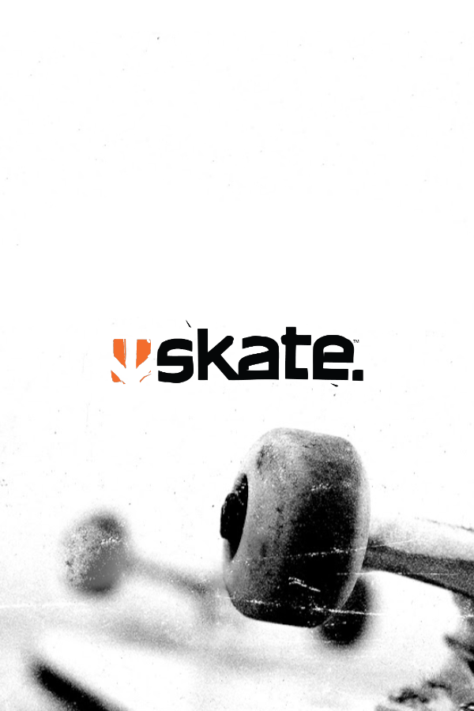

Game profile

skate.
Every archived year-end list appearance, including placement and points earned.
About the Game
(Online Interactions Not Rated by the ESRB) This game supports English only. Download the manual for this game by locating the game on http://marketplace.xbox.com and selecting “See Game Manual". The authentic skate experience. There are no refunds for this item. For more information, see www.xbox.com/live/accounts. Some multi-player functionalities may no longer be supported.
| Released | 2010-01-20 |
|---|---|
| Developer | Electronic Arts Vancouver, Full Circle |
| Publisher | Electronic Arts |
| Genres | Action, Sports |
| Platforms | PC, Xbox One, Xbox 360, PlayStation 3 |
Steam AchievementsMultiplayerFull controller supportCo-opThird PersonOnline Co-OpFunnyExplorationSandboxFree to PlayControllerEarly Access
Metacritic: 86 · View score
Where to Buy
Game information provided by RAWG.
2List appearances
1Years represented
Points by Year
62025 points
List History
| Year | Source | List | Placement | Points |
|---|---|---|---|---|
| 2025 | ESPN | The 25 best video games of 2025 | Unranked | 3 |
| 2025 | Maxim | The Best Video Games of 2025 | 18 | 3 |